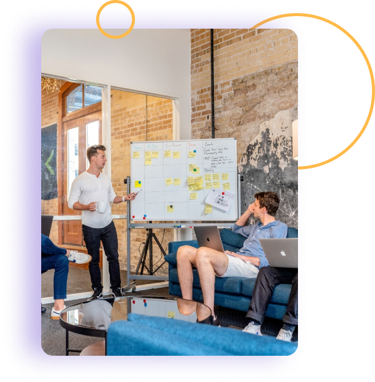

<div class="bg-blue">
    <section class="section">
        <div class="container">
            <div class="wc__community">
                <div class="wc__community-up">
                    
                    <div class="wc__community-up_content">
                        <h3>Develop Without Limits</h3>
                        <p>WooCommerce is developer friendly, too. Built with a REST API, WooCommerce is scalable and
                            can
                            integrate
                            with virtually any service. Design a complex store from scratch, extend a store for a
                            client, or
                            simply
                            add a single product to a WordPress site—your store, your way.</p>
                        <button>Read the Documentation</button>
                    </div>
                </div>
                <div class="wc__community-down">
                    <div class="wc__community-down_dcontent">
                        <h3>Know our
                            Global Community</h3>
                        <p>WooCommerce is one of the fastest-growing eCommerce communities. We’re proud that the
                            helpfulness of
                            the
                            community and a wealth of online resources are frequently cited as reasons our users love
                            it. There
                            are
                            80+ meetups worldwide!</p>
                        <button>Read the Documentation</button>
                    </div>
                    
                </div>
            </div>
        </div>
    </section>
</div>